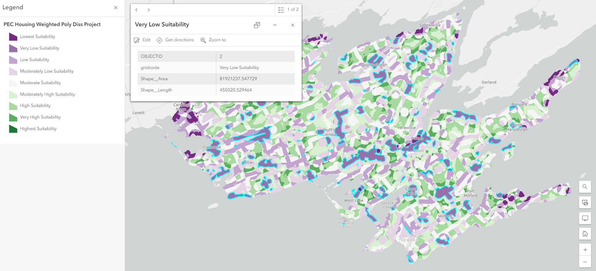
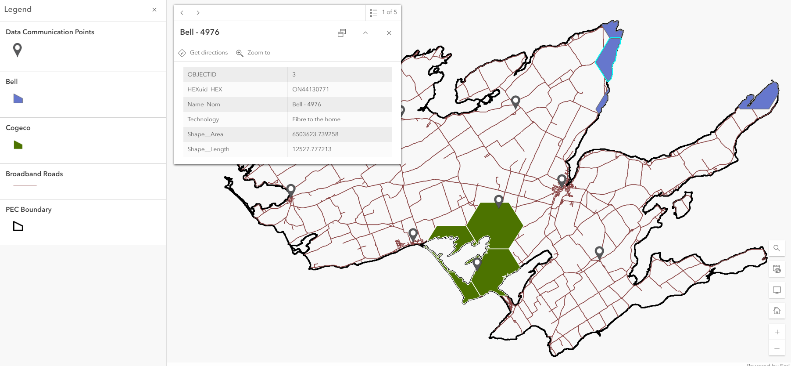
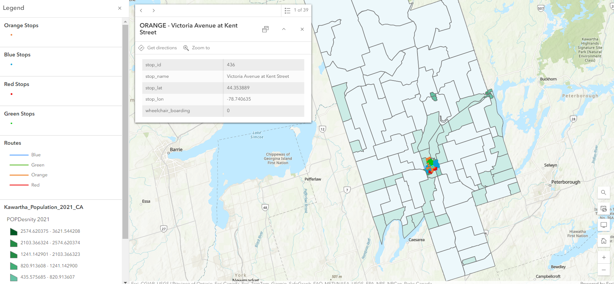

Three standalone web maps were created in addition to the web maps found in the Dashboards and Experience Builder...
This web map shows the results of a Multi-Decision Criteria Analysis Analytic Hierarchy Process for housing site suitability analysis in Prince Edward County, Ontario. Interact with the layers in the web map to see how the criteria played a part in the analysis results.
| CRITERIA | RECLASSIFICATION SUFACE CRITERIA | SUITABILITY | SQ KM | PERCENT |
|---|---|---|---|---|
| Final Suitability Surface | 9 | Highest Suitability | 0.11 | 0.11% |
| 8 | Very High Suitability | 50.86 | 4.78% | |
| 7 | High Suitability | 146.23 | 13.76% | |
| 6 | Moderately High Suitability | 179.77 | 16.91% | |
| 5 | Moderate Suitability | 223.92 | 21.06% | |
| 4 | Moderately Low Suitability | 198.18 | 18.64% | |
| 3 | Low Suitability | 144.62 | 13.61% | |
| 2 | Very Low Suitability | 81.77 | 7.69% | |
| 1 | Lowest Suitability | 25.89 | 2.44% |
This web map shows the results of broadband access across the county. It is useful for future housing and other infrastructure planning.
This web map shows Lindsay, Ontario's, current transit system overlain 2021 population density. It provides users with a comparison to PEC's transit system and can provide insight into future transit opportunities.
